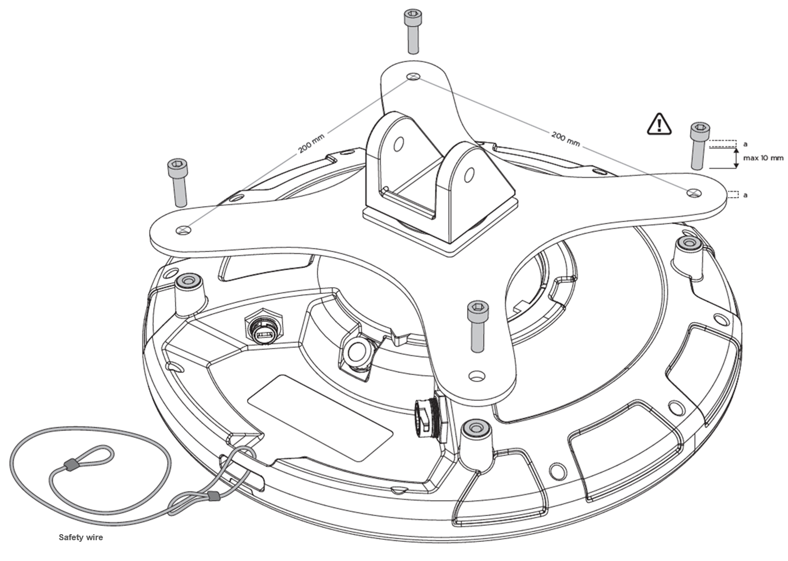
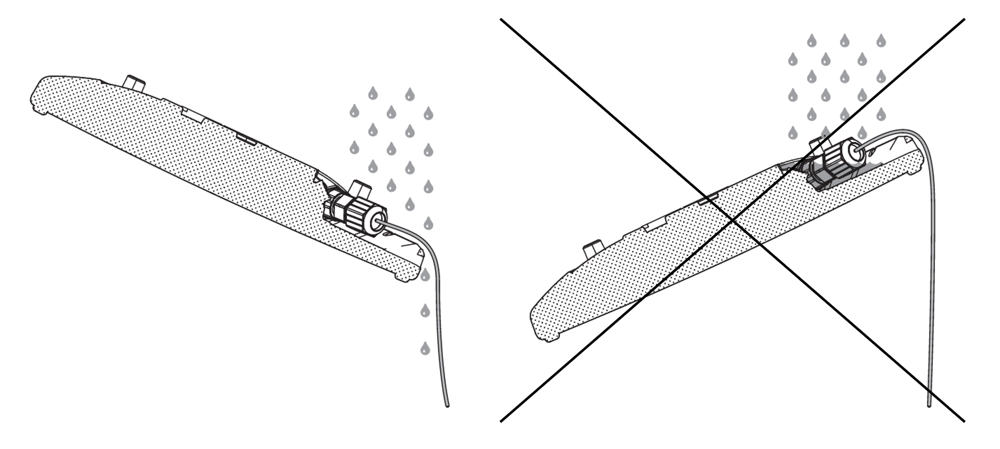

使用Q35定位器
在本节中，您将了解有关安装Q35以及将设备连接到电源和网络的有用信息。
安装
Q35的安装应确保其外壳侧面或前面没有任何金属障碍物（如空调管道、大型天花板桁架、建筑物上部结构)。在需要的情况下，使用刚性管道降低Q35远离这些障碍物。
使用VESA安装
选择兼容安装支架
Q35的安装孔按VESA MIS-F、200、Y、6标准排列(4个M6螺纹孔，200x200mm样式)。请根据安装环境设置的要求选择安装支架。请注意，某些安装支架型号在安装时可能会阻碍进入电缆端口。确保安装支架能够承受Quuppa Q35的重量（1.3 kg）和可能的风力载荷。
安装设备

- 将以太网电缆（和微型USB电缆，如使用）连接到定位器。设备的以太网口为USB火线RR-125300-03-ZX（即GTContact GT125300-03-Z3），请在安装前确认线缆的兼容性。由于Q35可以与屏蔽或非屏蔽以太网（例如Cat5e/6）一起使用，您可以选择最适合您的部署环境的电缆类型。例如，对于苛刻的环境（工业或户外），我们建议您选择屏蔽电缆，以更好地防止电磁干扰（EMI）和静电放电。Note: 如果安装在室外（或室内潮湿、灰尘较多），请使用室外设计的线缆和连接器，防止设备受水、受潮、受尘。在这种情况下，为了确保安装真正防水，我们建议您：
- 请使用已准备好的电缆，其中防水接线器已由电缆制造商安装。例如，USB火线RR-125320-02-XX（如GTContact GT125320-0X-xx）。如果准备好的电缆不可用，您也可以使用兼容的连接器外壳部件来安装RJ45连接器。例如，USB火线RR-125360-00或USB火线RR-125330-00）
- 确保根据制造商的说明牢固固定电缆连接器。
- 但是，除非您使用USB端口为定位器供电，否则，请不要拆掉USB端口的保护帽；在这种情况下，请确保同时使用防水USB电缆连接器。Q35的USB接口为USBFirewire RR-11A200-0P-XX，采用USBFirewire RR-11B220-05-XX系列USB防水电缆。
有关兼容连接器和电缆的更多信息，请通过support@quuppa.com联系Quuppa支持团队。
- 请使用网线测试仪检查线缆，确保所有连接器牢固固定。线缆布放到PoE交换机上时，应避免急转弯、弯折或拉扯线缆。您还可以使用设备指示灯排检连接故障如需获取更多信息，请参考下文“链接到网络”章节的内容。
- 请用四个螺栓将Q35连接到安装支架上（如下图所示）。请使用M6螺栓，装配扭矩为2Nm（最大允许扭矩为2.5 Nm）。
如果支架较薄，可以使用螺栓长度为10mm的M6螺栓。如果支架较厚，请检查合适的螺栓长度（螺栓的最大长度是10mm +所使用VESA支架的厚度）。请务必使用正确尺寸的螺栓，以免破坏设备。

- 将VESA安装支架安装到固定墙壁、天花板或桅杆上。Warning: 安装前一定要确保安装表面或桅杆能够承受设备的重量和可能的风力载荷。
- 将Q35对准预定的覆盖区域并拧紧所有紧固件。
- 确保以太网电缆的另一端连接到与Quuppa系统相连的设备上。
安装提示
-
如果安装在户外，请倾斜安装设备，以确保雨水可以从设备上排走。

-
请执行一次试安装，然后再订购所有的安装部件，以用于更大规模的项目。
-
请查阅当地机关的安全要求，并且，如果有必要，请使用安全线确保安全安装。
-
如果Q35需要倾斜，以实现预期的覆盖范围，请确保以相应的方式安装设备，以确保实现必要的机械倾斜度。
连接到电源
选项1：使用以太网供电（PoE）
Q35支持使用标准IEEE 802.3at 1型PoE组件（以太网供电交换机或以太网电源供电器）作为其电源。仅使用经过标准认证的PoE设备。使用PoE时，不需要单独的直流电源。
选项2：使用单独的5V直流微型USB
如果未使用PoE组件，请将Q35连接到带有微型USB的5V电源。仅使用兼容的电源。如果不确定兼容电源，请联系Quuppa。
连接电源后，Q35会自动开启。红色指示灯会闪烁多次，然后，红色指示灯保持静止，直到Q35连接到QPE。
连接到网络
使用RJ-45以太网插座用网线将Q35连接到网络。为了您的安全，并防止对设备产生任何损害，请仅将Q35连接到标准认证的网络组件。
Q35正常连接网络之后，如果没有被QPE软件激活时，红色指示灯会缓慢闪烁。QPE软件激活Q35时，蓝色指示灯闪烁或保持静态亮起。如果需要，可以在跟踪模式下关闭定位器的指示灯LED。如需更多信息，请查阅独立说明，
指示灯说明
下表显示了定位器指示灯指示的不同定位模式。
| 颜色序列 | 序列描述 | 指示灯模式 |
|---|---|---|
| 闪烁红色 - 绿色 - 蓝色一次 | 重新启动序列 | |
| 静态红色 | 定位器接通电源，没有IP地址 | |
| 闪烁红色 | 定位器连接到网络 | |
 |
闪烁蓝色 | 部署模式下的定位器 |
| 静态蓝色 | 追踪模式下的定位器 | |
| 闪烁白色 | 定位器固件正在升级 | |
| 闪烁红色两次，暂停和重复 | 定位器订阅无效 | |
| 关闭 | 跟踪模式下的可选指示灯状态 |